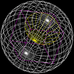

|  |
3D graphics
1.0
Library for creating and drawing objects defined as simple 3-dimensional shapes.
|
Student: Robert Okenczyc 298990 Instructor: Piotr Fabian Year: 2021 (II sem)
This library contains classes with definitions of simple 3D shapes and methods to modify them, print them as plain data or show them in Allegro 5 window as points or/and lines. Every method was written to accept or return 3D point data. There are 3 basic shapes:
opt - Because some shapes have some form of a circle in them there has to be a parameter for optimisation purposes, as in higher number, fog. opt = 1000 in a sphere, it could run very poorly because there will be a huge amount of vertices to calculate ( for opt = 1000 there are 999001 of vertices )
As it is a library usage would be more like documentation thats why there will be only some basic informations, Inside of this library there is class called canvas which contains methods and informations for initializing Allego 5 window with proper data, example of using it in your project:
canvas Canvas1 (width_of_a_window, height_of_a_window, title_for_window); //Initialision
while (Canvas1.endCondition()) {
while (true) {
if (Canvas1.FrameInit()) { return 0; }
// Shapes and transformations/deformations goes here
Canvas1.keyframe();
}
}
All other pieces of information will be shown in documentation and examples. ( Working program example at: See example page for more info. )